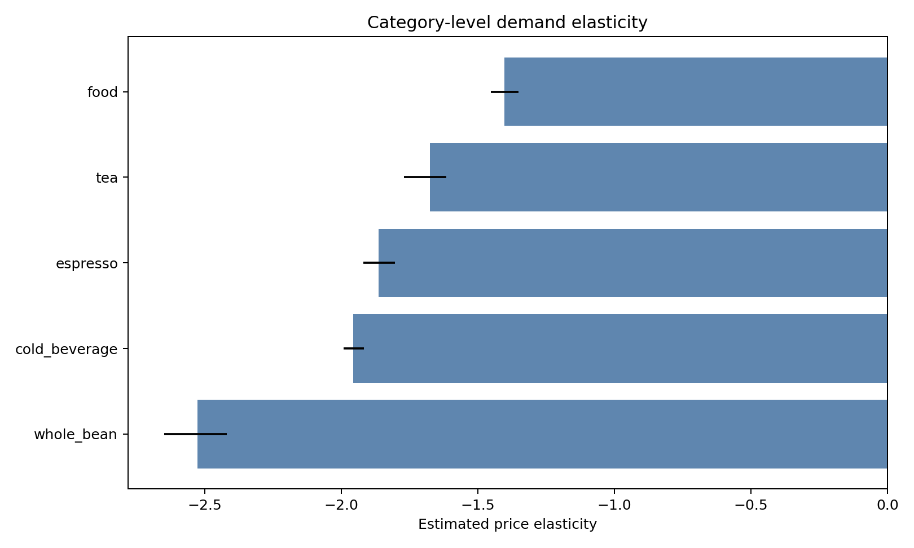
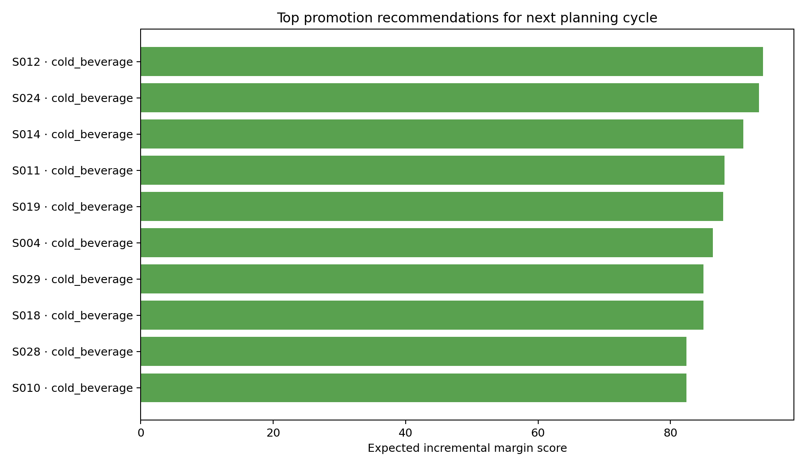
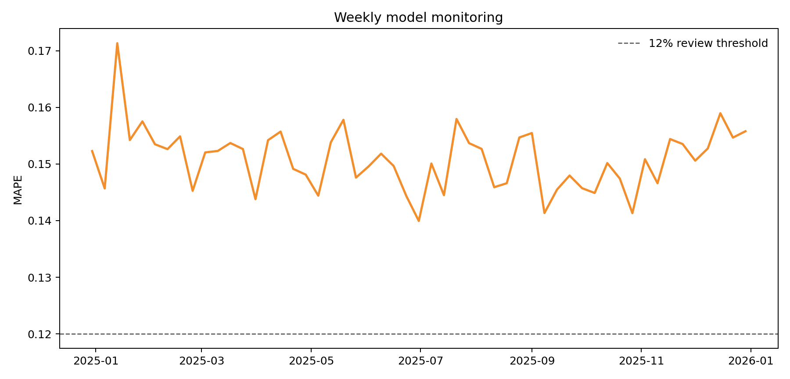

Proof of work project
Turning retail data into promotion decisions.
A compact data science workflow for a coffee retailer: SQL feature engineering, demand elasticity, causal validation, recommendation scoring, and weekly model monitoring.
Decision evidence
The charts are intentionally operator-readable: what is price sensitive, where promotions should go, and whether model outputs remain trustworthy enough for planning.
Category-level demand elasticity
Log-log model estimates which product categories are more responsive to price changes.

Top promotion recommendations
Recommendation scoring balances expected incremental units against margin tradeoffs.

Weekly model monitoring
MAPE and review thresholds keep model outputs accountable before they enter planning workflows.

How the workflow maps to the role
Built to match the Starbucks Data & Analytics job description: reproducible data shaping, applied modeling, clear communication, and decision-ready outputs.
Production path
- Replace synthetic data with governed transaction, item, promotion, store, and weather tables.
- Move feature SQL into dbt or a shared analytics codebase.
- Schedule model scoring in Databricks or Airflow.
- Publish recommendation adoption, drift, error, and margin impact in Tableau or Power BI.
Applicant note
I built this to show the full analytical operating loop rather than a standalone notebook: define the decision, create a reliable feature layer, estimate model behavior, validate it, translate outputs into actions, and monitor whether the output stays trustworthy.